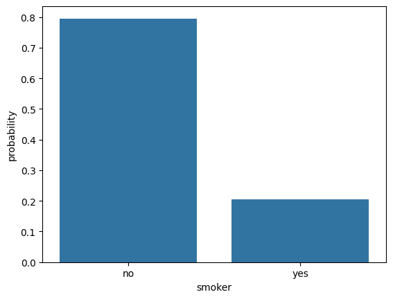

data_path = "../../data/"Health Care Cost Predictor
The data for this example is located in Kaggle in the following URL, but the modified file for this class is located here
Context of the data
The content is adapted from kaggle.
The datasets utilized in ‘Machine Learning with R’ by Brett Lantz are a valuable resource for learners, providing a foundation for hands-on experience with machine learning concepts. Although Packt Publishing does not make these datasets readily available online, they can be accessed through public domain sources, requiring only minor preprocessing and formatting to match the book’s specifications. This presents an opportunity for readers to engage deeply with the material, reproducing and building upon the book’s examples to reinforce their understanding of machine learning principles.
Variables
age: age of primary beneficiary
sex: insurance contractor gender, female, male
bmi: Body mass index, providing an understanding of body, weights that are relatively high or low relative to height, objective index of body weight \(\left(kg / m^2\right)\) using the ratio of height to weight, ideally 18.5 to 24.9
children: Number of children covered by health insurance / Number of dependents
smoker: Smoking
salary: Salary of the insurance contractor
region: the beneficiary’s residential area in the US, northeast, southeast, southwest, northwest.
charges: Individual medical costs billed by health insurance
Configuration of solution
Library Load
import pandas as pd
import numpy as np
import matplotlib.pyplot as plt
import seaborn as sns
import torch
import torch.nn as nnData Load
data = pd.read_csv(data_path+"insurance_2.csv")Number of GPUs available: 1
GPU 0: NVIDIA GeForce MX110num_gpus = torch.cuda.device_count()
print(f"Number of GPUs available: {num_gpus}")
for i in range(num_gpus):
print(f"GPU {i}: {torch.cuda.get_device_name(i)}")
device = 0 # "Select the index of the GPU you wish to use"
torch.cuda.set_device(device)
print(f"GPU selection: {torch.cuda.get_device_name(device)}")Number of GPUs available: 1
GPU 0: NVIDIA GeForce MX110
GPU selection: NVIDIA GeForce MX110Understanding the data
- Loading and summarizing data
- Visualizing distributions
- Exploring relationships between variables
- Analyzing categorical variables
1. Loading and summarizing data
data.info()<class 'pandas.core.frame.DataFrame'>
RangeIndex: 1338 entries, 0 to 1337
Data columns (total 8 columns):
# Column Non-Null Count Dtype
--- ------ -------------- -----
0 age 1338 non-null int64
1 sex 1338 non-null object
2 bmi 1338 non-null float64
3 children 1338 non-null int64
4 smoker 1338 non-null object
5 salary 1338 non-null float64
6 region 1338 non-null object
7 charges 1338 non-null float64
dtypes: float64(3), int64(2), object(3)
memory usage: 83.8+ KBdata.describe()| age | bmi | children | salary | charges | |
|---|---|---|---|---|---|
| count | 1338.000000 | 1338.000000 | 1338.000000 | 1338.000000 | 1338.000000 |
| mean | 39.207025 | 30.663397 | 1.094918 | 159064.411451 | 13270.422265 |
| std | 14.049960 | 6.098187 | 1.205493 | 41741.994963 | 12110.011237 |
| min | 18.000000 | 15.960000 | 0.000000 | 104622.922023 | 1121.873900 |
| 25% | 27.000000 | 26.296250 | 0.000000 | 130087.161933 | 4740.287150 |
| 50% | 39.000000 | 30.400000 | 1.000000 | 146740.897257 | 9382.033000 |
| 75% | 51.000000 | 34.693750 | 2.000000 | 171897.191284 | 16639.912515 |
| max | 64.000000 | 53.130000 | 5.000000 | 338460.517246 | 63770.428010 |
data.select_dtypes("object")| sex | smoker | region | |
|---|---|---|---|
| 0 | female | yes | southwest |
| 1 | male | no | southeast |
| 2 | male | no | southeast |
| 3 | male | no | northwest |
| 4 | male | no | northwest |
| ... | ... | ... | ... |
| 1333 | male | no | northwest |
| 1334 | female | no | northeast |
| 1335 | female | no | southeast |
| 1336 | female | no | southwest |
| 1337 | female | yes | northwest |
1338 rows × 3 columns
data["sex"] = data["sex"].astype("category")
data["smoker"] = data["smoker"].astype("category")
data["region"] = data["region"].astype("category")data.select_dtypes("number")| age | bmi | children | salary | charges | |
|---|---|---|---|---|---|
| 0 | 19 | 27.900 | 0 | 159272.812482 | 16884.92400 |
| 1 | 18 | 33.770 | 1 | 117088.625944 | 1725.55230 |
| 2 | 28 | 33.000 | 3 | 129043.852213 | 4449.46200 |
| 3 | 33 | 22.705 | 0 | 194635.486180 | 21984.47061 |
| 4 | 32 | 28.880 | 0 | 113585.904592 | 3866.85520 |
| ... | ... | ... | ... | ... | ... |
| 1333 | 50 | 30.970 | 3 | 145933.927725 | 10600.54830 |
| 1334 | 18 | 31.920 | 0 | 117665.917758 | 2205.98080 |
| 1335 | 18 | 36.850 | 0 | 133402.353115 | 1629.83350 |
| 1336 | 21 | 25.800 | 0 | 133975.682996 | 2007.94500 |
| 1337 | 61 | 29.070 | 0 | 216658.755628 | 29141.36030 |
1338 rows × 5 columns
data.info()<class 'pandas.core.frame.DataFrame'>
RangeIndex: 1338 entries, 0 to 1337
Data columns (total 8 columns):
# Column Non-Null Count Dtype
--- ------ -------------- -----
0 age 1338 non-null int64
1 sex 1338 non-null category
2 bmi 1338 non-null float64
3 children 1338 non-null int64
4 smoker 1338 non-null category
5 salary 1338 non-null float64
6 region 1338 non-null category
7 charges 1338 non-null float64
dtypes: category(3), float64(3), int64(2)
memory usage: 56.8 KB2. Visualizing distributions
sns.histplot(data["bmi"], stat="probability")3. Exploring relationships between variables
sns.scatterplot(data=data, x="bmi", y="charges", hue="smoker")4. Analyzing categorical variables
sns.countplot(data=data, x="smoker", stat="probability")
sns.boxplot(data=data, y="charges", x="smoker")sns.pointplot(data=data, x="sex", y="charges", hue="smoker")
g001 = sns.FacetGrid(data=data, col="smoker", row="sex")
g001.map(plt.scatter, "bmi", "charges")sns.regplot(data=data, x="salary", y="charges",
scatter_kws={"color": "blue"}, # Color de los puntos
line_kws={"color": "red"})Model Implementation
class LinearRegression(nn.Module):
def __init__(self):
super(LinearRegression, self).__init__()
self.linear = nn.Linear(1, 1)
def forward(self, x):
return self.linear(x)